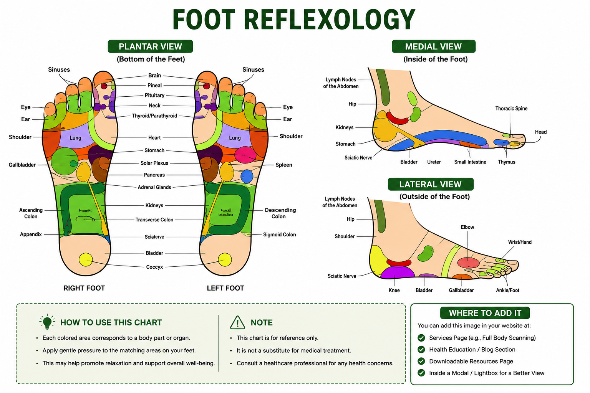
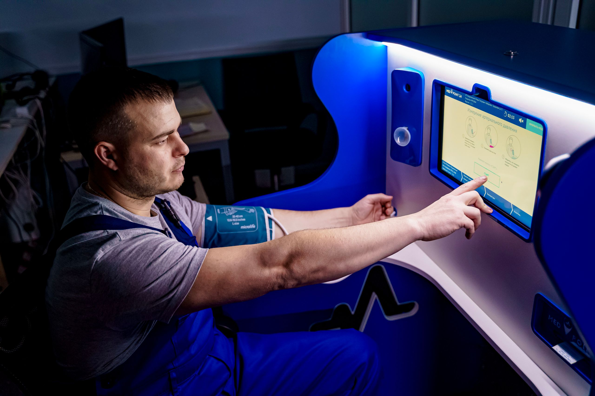
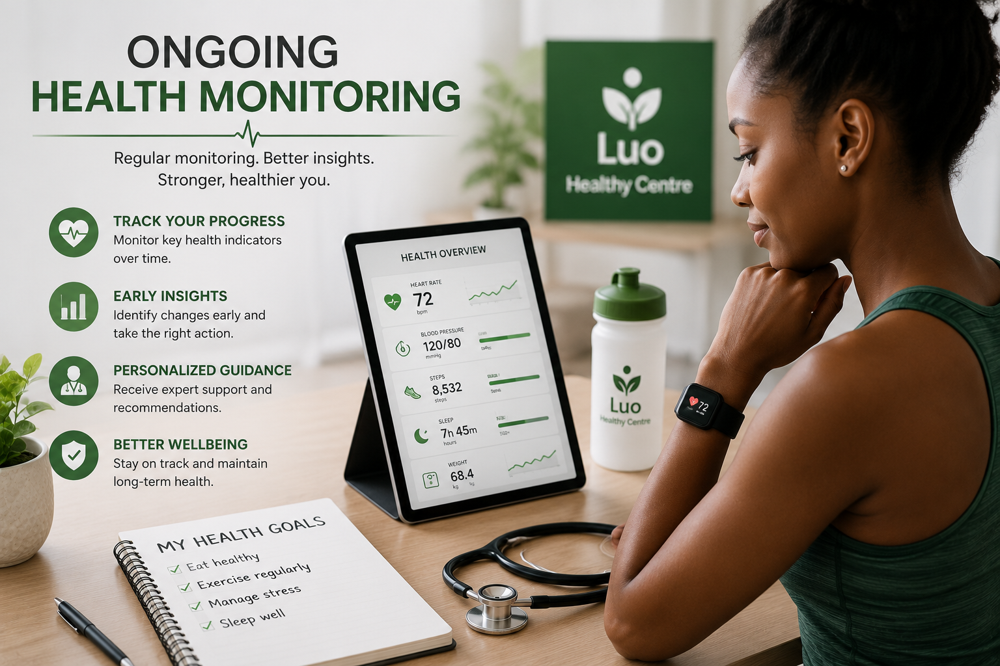

Health Services We Provide
Full Body Scanning
Our Full Body Scanning service provides a comprehensive, non-invasive assessment of your body's overall health. The scan is designed to identify potential health concerns, monitor body systems, and provide valuable information to support your wellness journey.
What the Scan Can Help Assess
- General body health
- Organ function indicators
- Circulation and cardiovascular wellness
- Bone and joint health
- Nutritional status
- Body composition
- Stress levels
- Overall wellness indicators
Benefits
- Non-invasive procedure
- No surgery required
- Fast assessment
- Personalized wellness recommendations
- Early awareness of potential health concerns

After Your Scan
One of our healthcare professionals will review your results with you and explain the findings. You will receive practical recommendations to improve your health and wellbeing.
What You Will Receive
- One-on-one consultation with a healthcare professional
- Detailed review of your body scan results
- Professional health advice tailored to your needs
- Personalized wellness recommendations
- Opportunity to ask questions about your health

Benefits
- Better understanding of your overall health
- Clear explanation of your assessment results
- Practical lifestyle and wellness guidance
- Support for making healthier daily decisions
- Personalized recommendations for long-term wellbeing
Duration
Approximately 30–45 minutes.
Book AppointmentWellness Assessment
Our Wellness Assessment provides a complete overview of your current health and well-being. Using advanced body scanning technology and a personalized consultation, we evaluate key indicators that may help identify potential imbalances before they become more serious.
What We Assess
- Overall body wellness
- Energy levels and fatigue indicators
- Nutritional balance
- Stress and lifestyle factors
- General organ health overview
- Body composition and weight management
- Hydration status
- Metabolic wellness
Benefits
- Personalized wellness report
- Early identification of potential health concerns
- Better understanding of your body's condition
- Guidance for healthier lifestyle choices
- Nutrition and wellness recommendations
- Progress tracking during future visits
- Improved confidence in managing your health

Personalized Health Plans
Every individual has unique health needs and wellness goals. Our Personalized Health Plans are designed to provide recommendations tailored to your body scan results, lifestyle, and overall health objectives. We work with you to create a practical plan that supports long-term wellness and healthy living.
What's Included
- Personalized wellness recommendations
- Lifestyle improvement guidance
- Nutrition and healthy eating advice
- Physical activity recommendations
- Stress management strategies
- Wellness goal planning
- Progress monitoring and follow-up
- Ongoing support and plan adjustments
Benefits
- Health plan tailored to your unique needs
- Clear and achievable wellness goals
- Practical lifestyle recommendations
- Better understanding of your health priorities
- Support for building long-term healthy habits
- Improved motivation to stay on track
- Regular progress reviews and professional guidance
Why Choose Luo Healthy Centre?
At Luo Healthy Centre, we understand that no two people are alike. Our personalized health plans are designed around your unique needs, helping you make informed lifestyle choices through practical guidance, ongoing support, and a commitment to your long-term well-being.
Book AppointmentOngoing Health Monitoring
Our Health Monitoring service is designed to help you stay informed about your wellness over time.
Through regular follow-up visits and wellness assessments, we monitor your progress, review any
changes in your health, and provide updated recommendations to help you achieve your long-term
wellness goals.
Regular monitoring can help you understand how your lifestyle choices are affecting your overall
well-being and keep you motivated on your health journey.
What We Monitor
- Overall wellness progress
- Changes in body scan results
- Lifestyle and wellness improvements
- Nutrition and healthy habits
- Weight and body composition
- Energy levels and general well-being
- Progress toward personal health goals
- Areas that may require additional attention

Benefits
- Track your wellness progress over time
- Measure improvements through follow-up assessments
- Receive updated personalized recommendations
- Stay motivated with regular health reviews
- Identify changes in your overall wellness
- Support long-term healthy lifestyle habits
- Build confidence in managing your health

Who Is This Service For?
- Clients who have completed a wellness assessment
- Individuals following a personalized health plan
- People making lifestyle or nutrition changes
- Anyone committed to improving long-term wellness
- Individuals who want regular health progress reviews
Regular health monitoring helps you stay informed about your progress, identify positive changes, and make timely adjustments to support a healthier lifestyle.
What We Monitor
- Overall health and wellness progress
- Changes in body scan results
- Body composition and weight management
- Lifestyle and nutrition improvements
- Energy levels and daily wellbeing
- Progress toward your health goals
- General wellness indicators
- Areas that may need additional attention
Benefits
- Track your health progress over time
- Identify positive changes early
- Receive updated wellness recommendations
- Stay motivated to achieve your health goals
- Support long-term healthy habits
- Build confidence in managing your wellbeing
- Receive continuous professional guidance

Ongoing Wellness Support
Maintaining good health is an ongoing journey, and our Wellness Support service is designed to help
you stay on track. We provide continuous guidance, follow-up assessments, and practical
recommendations to help you achieve and maintain your long-term wellness goals.
Whether you're working toward a healthier lifestyle or monitoring your progress, our team is here to
support you every step of the way.
Our Wellness Support Includes
- Regular wellness follow-up sessions
- Progress monitoring and evaluations
- Healthy lifestyle guidance
- Nutrition and wellness recommendations
- Stress management support
- Healthy habit coaching
- Answers to your wellness questions
- Personalized wellness advice
Benefits
- Continuous guidance throughout your wellness journey
- Support for maintaining healthy lifestyle habits
- Regular monitoring of your progress
- Personalized recommendations as your needs evolve
- Increased motivation and accountability
- Improved overall health and wellbeing
- Long-term professional wellness support
Full Body Scanning
Comprehensive body assessments designed to provide valuable health information.
Health Consultation
Professional consultations to discuss your health assessment and next steps
Wellness Assessment
General wellness evaluations to help support a healthier lifestyle.
Personalized Health Plans
Receive health recommendations tailored to your individual needs.
Health Monitoring
Follow-up visits to help track your health and wellness progress.
Wellness Support
Ongoing support and guidance to help maintain a healthy lifestyle.